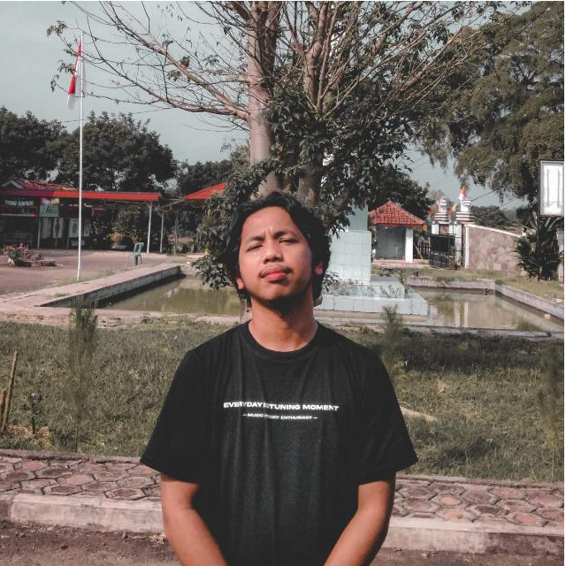
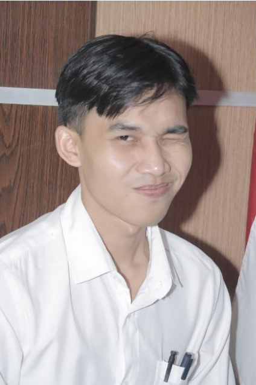

Alumni
Nama: Amril Aziz
Jurusan: Manajemen Informatika
Tahun Lulus: 2020
Pekerjaan: Analis Data di PT XYZ

Alumni
Nama: Ahmad Sanusi
Jurusan: Manajemen Informatika
Tahun Lulus: 2018
Pekerjaan: Software Engineer di ABC Corp
Alumni
Nama:Rizky Septian
Jurusan: Manajemen Informatika
Tahun Lulus: 2019
Pekerjaan: Konsultan IT di DEF Solutions